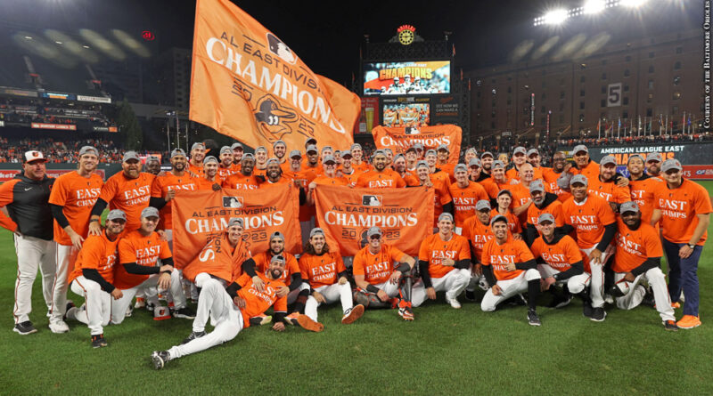
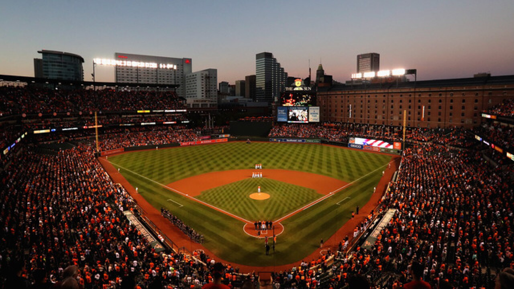

Baltimore Orioles
The Baltimore Orioles (also known as the O's) are an American professional baseball team based in Baltimore. The Orioles compete in Major League Baseball (MLB) as a member of the American League (AL) East division. As one of the American League's eight charter teams in 1901, the franchise spent its first year as a major league club in Milwaukee as the Milwaukee Brewers before moving to St. Louis to become the St. Louis Browns in 1902. After 52 years in St. Louis, the franchise was purchased in 1953 by a syndicate of Baltimore business and civic interests led by attorney and civic activist Clarence Miles and Mayor Thomas D'Alesandro Jr. The team's current owner is American trial lawyer Peter Angelos. The Orioles' home ballpark is Oriole Park at Camden Yards, which opened in 1992 in downtown Baltimore.
Recent History
After 14 consecutive losing seasons between 1998 and 2011, the team qualified for the postseason three times under manager Buck Showalter and general manager Dan Duquette, including a division title and advancement to the American League Championship Series for the first time in 17 years in 2014. Four years later, the Orioles lost 115 games, the most in franchise history. The Orioles chose not to renew the expired contracts of Showalter and Duquette after the season, ending their respective tenures with Baltimore. The Orioles' current manager is Brandon Hyde, while Mike Elias serves as general manager and executive vice president. Two years after finishing 52–110 in 2021, the Orioles went 101–61 in 2023, en route to winning the AL East for the first time since 2014.
The Orioles began their rebuild by trading away fan favorites Manny Machado, Zach Britton, Jonathan Schoop, Brad Brach, Kevin Gausman, and Darren O'Day in July 2018. In 2019, the Orioles finished 54–108, which was the second Orioles team to surpass the 1988 Orioles team's losses. In 2020, the Orioles experienced an upside in their rebuild, as they finished 25–35 in a season shortened by the COVID-19 pandemic, their best finish since 2017. In 2021, the Orioles experienced two different losing streaks of at least 14, en route to a 52–110 finish. 2021 was their third 110-loss season in team history. Their first was 1939 when they were known as the St. Louis Browns, the second was in 2018 as the Baltimore Orioles. In 2022, anticipated first-round pick catcher Adley Rutschman made his major-league debut in addition to rookie closer Felix Bautista. The team shocked the media by outperforming expectations in 2022 and finished the season with a 83-79 record.
In April 2023, the Orioles went 19–9, setting a franchise record for wins in the month of April. By August 2023, the Orioles, led by a core of first-and-second-year players Adley Rutschman, Gunnar Henderson, Félix Bautista and Kyle Bradish, were in first place in the division and described in The Athletic as "young, fun and arguably the best story in baseball." However, the front office went under scrutiny when it was reported that play-by-play announcer Kevin Brown had been suspended indefinitely by the Orioles for his pregame remarks on MASN, the team-owned network, two weeks earlier. During a "seemingly benign" introduction to a series against the Tampa Bay Rays, Brown observed that the team had struggled to win a series in Tampa in the past several seasons. It was described in The Athletic as a "petty" move by John Angelos, "the only person [in the organization] with enough power that no one dare question the validity of anything he says and does, no matter how foolish it is." Several broadcasters came to Brown's defense after the news broke. Gary Cohen said the team had "draped itself in utter humiliation" and Michael Kay said the suspension made "the Orioles look so small and insignificant and minor league." Brown returned to broadcasting for the team and stated in a public message that "recent media reports [had] mischaracterized my relationship with my adopted hometown Orioles" and that his relationship with the team was "wonderful".
The Orioles finished the 2023 season with an impressive record of 101–61, winning the American League East division for the first time since 2014. On July 30th, the pitching staff of Dean Kremer, Mike Baumann, Shintaro Fujinami, Danny Coulombe, and Yennier Cano combined to set a franchise record for the most strikeouts in a 9-inning game against the Yankees. The 2023 pitching staff also broke the Orioles franchise record of single-season strikeouts on September 6th. However, the team's successful season ended in the postseason American League Division Series, with the Orioles losing three straight games to the Texas Rangers. The series sweep was the first time since the 2022 season that the Orioles had been swept in a series.
Musical Traditions
"O!"
It has been a tradition at Orioles games for fans to yell out the "Oh" in the line "Oh, say does that Star-Spangled Banner yet wave" in "The Star-Spangled Banner". "The Star-Spangled Banner" has special meaning to Baltimore historically, as it was written during the Battle of Baltimore in the War of 1812 by Francis Scott Key, a Baltimorean. The tradition is often carried out at other sporting events, both professional and amateur, and even sometimes at non-sporting events where the anthem is played, throughout the Baltimore/Washington area and beyond. Fans in Norfolk, Virginia, chanted "O!" even before the Tides became an Orioles affiliate. The practice caught some attention in the spring of 2005, when fans performed the "O!" cry at Washington Nationals games at RFK Stadium. The "O!" chant is also common at sporting events for the various Maryland Terrapins teams at the University of Maryland, College Park.
"Thank God I'm a Country Boy"
It has been an Orioles tradition since 1975 to play John Denver's "Thank God I'm a Country Boy" during the seventh-inning stretch. In reality, the song was tremendously successful nationwide, topping the Billboard Top 100 for one week in 1975, and was played in stadiums across the country. The Orioles were chasing the Red Sox for the American League East Division title and incorporated numerous "good luck charms." After an inspiring comeback win, Oriole staff began playing this song at the seventh-inning stretch of every home game as one of the good-luck charms, beginning in August. During a nationally televised game on September 20, 1997, Denver himself danced to the song atop the Orioles' dugout, one of his final public appearances before dying in a plane crash three weeks later.
"Orioles Magic" and other songs
Songs from notable games in the team's history include "One Moment in Time" for Cal Ripken's record-breaking game in 1995, as well as the theme from Pearl Harbor, "There You'll Be" by Faith Hill, during his final game in 2001. The theme from Field of Dreams was played at the last game at Memorial Stadium in 1991, and the song "Magic to Do" from the stage musical Pippin was used that season to commemorate "Orioles Magic" on 33rd Street. During the Orioles' heyday in the 1970s, a club song, appropriately titled "Orioles Magic (Feel It Happen)", was composed by Walt Woodward,[61] and played when the team ran out until Opening Day of 2008. Since then, the song (a favorite among all fans, who appreciated its references to Wild Bill Hagy and Earl Weaver) is played (along with a video featuring several Orioles stars performing the song) only after wins. In the 2010s, "Seven Nation Army" was often played as a hype song while the fans chant the signature bass riff as a rally cry during key moments of a game or after a walk-off hit. In the 2023 season, closer Felix Bautista would come out of the bullpen to the ominous whistle of "The Wire" character Omar Little.
